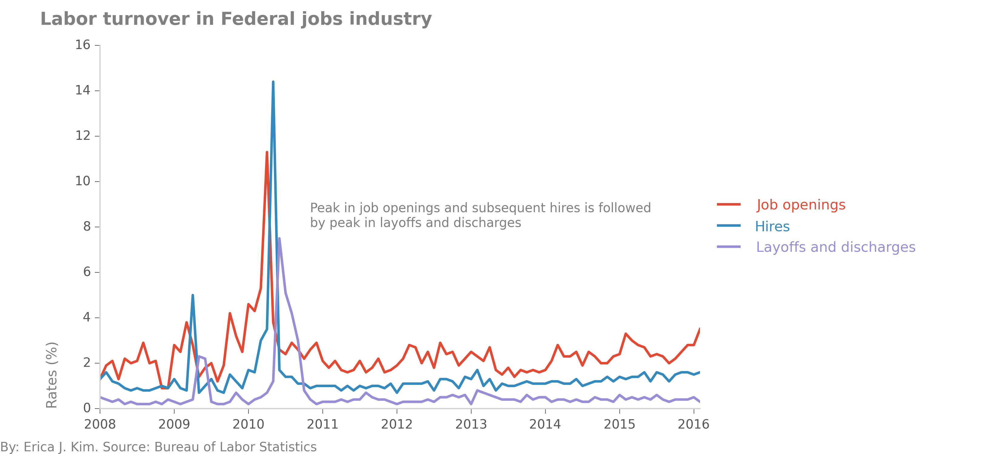

Working with data from the Bureau of Labor Statistics, part 2
See part 1 of Working with data from the Bureau of Labor Statistics
Skip to final pictures
Job Openings and Labor Turnover Survey
For the second part of this section, I'll give an example of working with one of the BLS's coded survey files.
Specifically, I want to see which industries are laying off the most people, and which industries have the
biggest hiring gaps. In order to do this, I can turn to the BLS's survey on Job Openings and Labor Turnover.
The corresponding files can be found here, on this
relatively plain looking subpage:

The majority of the data on the BLS website comes in such a format. This may look a bit strange and intimidating
at first, but it's actually quite simple to navigate and understand. The first file you should read is "jt.txt",
which gives a thorough description of the survey as well as descriptions of all the other files in the folder.
From there, we can see which file contains the data we want (in this case, it is "jt.data.0.Current.txt"). The first
couple of lines of that file look like this:

The headings of this tab-delimited file are: "series_id", "year", "period", "value", and "footnote_code". The latter
4 columns are easy enough to figure out. However, what is "series_id"? If we go back to "jt.txt", we'll find the
following explanation:
- first 2 characters: survey abbreviation
- next 1 character: seasonal adjustment (S-seasonally adjusted figures, U-unadjusted)
- next 6 characters: industry code
- next 2 characters: region code (NE-Northeast, SO-South, W-West, MW-Midwest, 00-Total US)
- next 2 characters: data element code (JO-Job openings, HI-Hires, LD-Layoffs and discharges, OS-other separations,
QU-quits, TS-total separations)
- last 1 character: rate level code (R-rate, L-level in thousands)
So, for example, the series_id JTS000000NEJOR can be broken out into:
survey abbreviation = JT ("Job openings and labor turnover survey")
seasonal = S (seasonally adjusted figures)
industry code = 000000 (total nonfarm industry)
region code = NE (northeast region)
data element code = JO (job openings)
rate level code = R (rate)
Choosing a single level of industry to work with
Industry code refers to the North American Industry Classification System (NAICS), which is the
system that we were introducted to in part 1.
Some of the industries that are represented in the file are:
- 000000 - Total nonfarm
- 100000 - Total private
- 480099 - Transportation, warehousing, and utilities
- 520000 - Finance and insurance
- 510099 - Financial activities
- 900000 - Government
- 920000 - State and local
- 923000 - State and local government education
As in part 1, we can see that different levels of industry are surveyed in the file. "Total nonfarm" and "Total
private" are HUGE categories, and only useful when we want to a picture of the total U.S. economy in general. "State and local government
education" is a subset of "State and local", while "State
and local" is a subset of "Government". We can distinguish the different hierarchical levels by the number of trailing
zeros. There are 5 different NAICS industry levels, ranging from "sectors" whose NAICS codes are
comprised of 2 digits (e.g. "Construction","Durable goods manufacturing","Information") to the most specific industries
whose NAICS codes have 6 digits ("Financial activities", "Transportation, warehousing, and utilities"). In this dataset,
there are 15 2-digit NAICS-coded sectors, 2 3-digit NAICS-coded sub-sectors, 4 6-digit NAICS-coded industry groups,
and 7 1-digit general categories (e.g. "Government", "Total nonfarm", "Total private").
Because they are the most represented in
the data, we will focus on
the 2-digit NAICS-coded sectors/industry groups. By selecting a single level to work with, we can more clearly rank the
different industries and determine which industries have the most layoffs or the biggest hiring gaps.
Note: I sometimes use
the terms "industry" and "sector" interchangeably, but will always be referring to a single NAICS level unless otherwise
stated. Also, the Bureau
of Labor Statistics uses an additional coding system, SIC (Standard Industrial Classification), which uses 4 digits. Data files
on the BLS website use either SIC or NAICS, and there are resources that allow you to figure out what the SIC code is
for a specific NAICS number, and vice versa.
Transforming ugly datafile into clean dataframe
Because the text file is very organized, with columns delimited by tabs, getting the data is relatively simple. The only
tricky part is to separate the series_id into different columns, and even this is a piece of cake:
JOLTS_file = "jt.data.0.Current.txt"
# separate first column into multiple columns
cols=['series_id','year','period','value','footnote_codes']
DF=pd.read_csv(JOLTS_file,delimiter="\t",names=cols,skiprows=1)
newcols=DF['series_id'].str.extract('([A-z]{2})([SU]{1})(\d{6})([A-Z0-9]{2})([A-Z]{2})([A-Z]{1})',expand=True)
newcols.columns=['survey','seasonal','industry','region','dataelement','ratelevel']
df=DF.join(newcols)
# Set index to datetime column
df=df[df['period']!="M13"] # remove annual average
df['period'] = df['period'].map(lambda x: x.lstrip('M')) # strip "M" in front of each month date
df['date']=df['year'].map(str)+"-"+df['period']+"-01" # create new date column
df['date']=pd.to_datetime(df.date, format="%Y-%m-%d") # change date column format to datetime
df=df.set_index('date') # set dataframe index to date
df.index=df.index.to_datetime() # again, set index to datetime format (maybe unnecessary)
# separate first column into multiple columns
cols=['series_id','year','period','value','footnote_codes']
DF=pd.read_csv(CE_file,delimiter="\t",names=cols,skiprows=1)
newcols=DF['series_id'].str.extract('([A-z]{2})([SU]{1})(\d{8})(\d{2})',expand=True)
newcols.columns=['survey','seasonal','industry','data_type']
df2=DF.join(newcols)
df2=df2[df2['period']!="M13"] # remove annual average
df2['period'] = df2['period'].map(lambda x: x.lstrip('M')) # strip "M" in front of each month date
df2['date']=df2['year'].map(str)+"-"+df2['period']+"-01" # create new date column
df2['date']=pd.to_datetime(df2.date, format="%Y-%m-%d") # change date column format to datetime
df2=df2.set_index('date') # set dataframe index to date
df2.index=df2.index.to_datetime() # again, set index to datetime format (maybe unnecessary)
bad_inds=["100000", "000000", "600000","900000","929000","510099","110099","300000","923000","480099","540099","400000","700000"]
criterion = df['industry'].map(lambda x: x not in bad_inds)
df = df[criterion]
We now have a clean dataframe, that looks like this:

Exploratory analysis
We can now use Pandas to manipulate the dataframe, and Matplotlib to make
pretty, publication-worthy figures.
Layoffs and discharges
Let's look at which industries had the most layoffs and discharges in the dataset. This can be calculated
in different ways, depending on what interpretation you have of "most". We can look at the average of each industry's
layoff numbers over the course of January 2008 to February 2016. Similarly, we could compare the average of each industry's
layoff rate (in percentage) instead. Or, we could define "most" as in which industry had the
highest layoff number, or rate, at any given moment. We could even aggregate all of the layoff numbers
for each industry over the January 2008 to February 2016 period, and then determine which industry laid off the
most workers in total.
Let's go with the simplest calculation for now, and find the top 3 industries that had the highest number of layoffs &
discharges
on average. By playing around with our dataframe, we find out that the industries most hard-hit on
average were "Construction", "Retail trade", and "Accommodation and food services". From 2008 - present, these three industries
had significantly higher numbers of layoffs and discharges than the other industries. "Construction" had a mass layoff in
April 2009, letting 402,000 workers go, while "Accommodation and food services" had a singular mass layoff in April 2015,
with 295,000 jobs lost.

All three of the aforementioned industries had significantly higher numbers of layoffs and discharges than the other industries
on average. However, these industries potentially employed more people on average than other industries. A more accurate picture
of industry health can be found when we look at layoff and discharge
rates. Here, we see that "Construction" is still the industry with the most layoffs and discharges, but now in terms of percentage. In
April 2009, the layoff rate reached a peak value of 6.5%. As the Great Recession ended, the construction industry appeared to recover, with its
layoff and discharge rate gradually decreasing to present day levels of ~3%. While this rate is stil higher than the average of the other
industries, it is markedly lower than its 2009-2013 figures. In contrast, "Arts, entertainment, and recreation"
rates of layoffs and discharges remain persistently high, as well as erratic, throughout the entire survey period.

Hiring gap
We can calculate an industry's hiring gap by comparing its job openings to its hires. To do so, I created a new
variable in the dataframe, "hiring gap", which was just an industry's job openings minus its hires, both in terms of
rates and absolute numbers. When we look at the top three industries with the highest hiring gaps on average, we can
see that "Health care and social assistance" had hiring gaps in the 100-500,000 range since 2011. In contrast,
the average hiring gap for the other (non-top 3) industries was below 0 before 2013-2014, meaning that job hires
outpaced job openings. In the case of the early years of the survey, the below-zero hiring gap is likely dominated by
the near or below-zero job growth in most industries.

We can also look at the hiring gap rate among industries. Here, we some some really odd patterns with the Federal
jobs sector.

Let's investigate, by looking at the rates of both job offerings and hires, for the Federal jobs industry.

The Federal jobs industry had a sharp spike in job offerings in April 2010, followed by a sharp spike in hires in May
2010. This labor pattern results in the odd looking plot in the previous figure. My initial interpretation of this figure
is that Federal government job openings are filled up very quickly. While this is most obvious in April-May 2010, we can
also see this same phenomenon occurring in the beginning of 2009 as well. Are Federal government jobs filled quickly because
of budget and timing characteristics specific to the Federal sector? Or are these labor patterns symptomatic of other
issues?

Wow, strange! A month after a burst in hiring employees, the Federal jobs sector then follows with a burst in
employee layoffs and discharges. This definitely warrants more exploration...